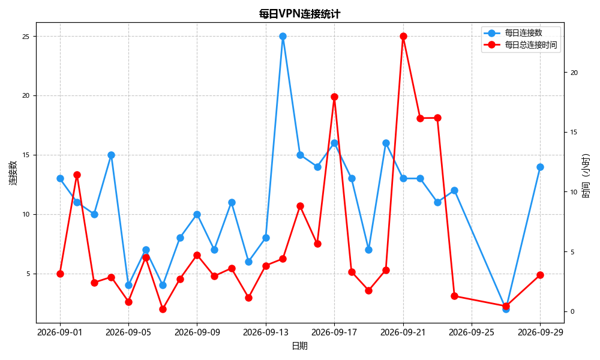

学生目录十月月度报告
本篇报告由菀妙海完成，我们将这个月的工作成果汇报如下：
一、本月VPN服务流量统计
如下是十月份的流量统计与VPN各日的使用分析。
十月流量趋势


十月份全月累计消耗校园带宽 756.1GB。
二、本月功能更新
（一）AI画图
我们在本地部署了一个AI画图的网站，这样子大家也可以在学校体验AI画图啦！
画图AI部署由菀妙海完成。
画图的AI我们选择的是Z-image Tutbo CPU加速量化版，这样就可以避免我们的GPU（显卡）是个亮机卡导致的速度严重缓慢。
最新版网页端：AI画图（内网）
（二）公网的仿Discord聊天室
我们的成员菀妙海花费了16.6元巨款租了一个公网服务器，部署了Haven聊天室，可以语音通话，屏幕分享等等。
花了我整整16块啊啊啊啊啊！
目前校内除非上网否则不可用。
（三）FRP内网穿透
上面提到的租的服务器放着也是放着，我们就顺便用来搞穿透了。
现在可以在公网打开我们的网页啦！所有网页上的功能都可以正常使用。
（四）新的MC服务器和验证API！
很多人其实都不知道我们其实一直有在跑MC服务器吧……
现在新的服务器是Forge 1.20.1 哦，加了几个好玩的模组，但是进入服务器要用的客户端要一段时间后才放出来……
我们还搞了专门的第三方认证服务器，到时候会内置在客户端！
三、服务更新
（一）代理服务转变
我们更改了VPN密码为 **xsmlnb1145**，请大家及时更新密码。
四、硬件升级
我们将我们的服务器配置再次进行了升级
我们升级了服务器配置，增加了内存，以满足更高的需求。
目前服务器内存为32GB。
五、本月贡献者
菀妙海 · 报告整理、流量统计、主站维护
撰写报告以及部署了一些好玩的东西。
辰艾摸鱼王
我忘了他干啥了。
YuebiTTT · openlist_beautification
虽然已经毕业，但仍然时刻关心我们的服务器！
感谢各位的付出！
六、附：GitHub 组织仓库索引
下面是学生目录在 GitHub 上托管的部分开源仓库，欢迎感兴趣的同学一起 fork 和共建。
- 核心项目： Ps-Student-Catalog（主站点）、 NetworkRepairs（网络连接工具）、 Chatbox-Front（局域网聊天室）
- 数据分析： VPN_logs_anal（VPN日志分析）
- 网络工具： InternetRepair（网络修复组件）
- 存储美化： openlist_beautification（openlist 玻璃拟态主题）
- 组织页面： Ps-Student-Catalog-Team.github.io
所有项目均已开源，欢迎访问 GitHub 组织主页 一起共建。
七、下月计划
- Ps-Student-Catalog 升级：将推出学生目录 3.0 版本，支持更多功能。
- 编写手机端VPN连接器：优化分类与搜索体验。
招新：一起加入我们的团队
如果你看到这里，说明你大概知道我们平时在做什么了。学生目录不是什么正式社团，也没有太多规矩，就是一群人的，觉得“这东西挺有意思”，顺手把校园里一些不太方便的地方做成了能用的工具。
想加入的话，可以点击链接加入QQ群 学生目录 ， 找辰艾或菀妙海都可以；也可以在 GitHub 组织仓库提 issue，备注一下“招新”。不用写正式简历，说说你想做什么、会什么、每周大概能花多少时间就行。